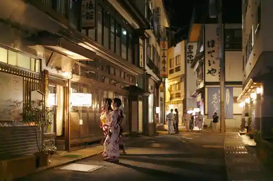
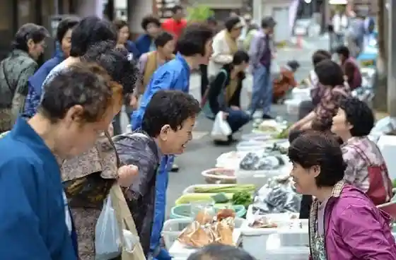
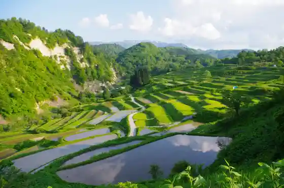
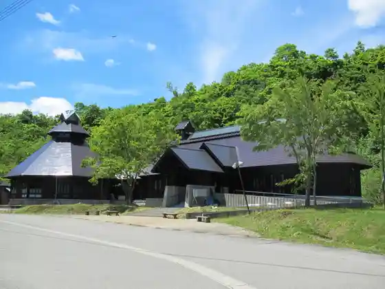

Hiji Ori Onsen
Ohkura, Yamagata · 0233-34-6106 · Official / source link

Hiji Ori Meibutsu (Hiji Ori Asa City)
Ohkura, Yamagata · 0233-34-6106 · Official / source link

Shi Ke Village no Tanada
Ohkura, Yamagata · 0233-75-2105 · Official / source link

Karudera Onsen Kan
Ohkura, Yamagata · 0233-76-2622 · Official / source link

Shi Ke Village Tanada Hotaru Hi Konsato
Ohkura, Yamagata · 0233-75-2105 · Official / source link
Hiji Ori Onsen Gensen Park
Ohkura, Yamagata · 0233-34-6106 · Official / source link
Dai 30 Kai Okura Yuki Mo no Gatari
Ohkura, Yamagata · 0233-34-6106 · Official / source link
Hiji Ori Damuraitoappu
Ohkura, Yamagata · 0233-34-6106 · Official / source link
Ogon Onsen
Ohkura, Yamagata · 0233-76-2622 · Official / source link
Dai 25 Kai (Hiji Ori Onsen Sansai no Gekkan Shoku Fea) Kaisai !
Ohkura, Yamagata · 0233-34-6106 · Official / source link
Jizo Kura
Ohkura, Yamagata · 0233-34-6106 · Official / source link
Hiji Ori Kokeshi
Ohkura, Yamagata · 0233-76-2222 · Official / source link
Yu no Dai Ski Area :2025-2026 Shiizun
Ohkura, Yamagata · 0233-76-2636 · Official / source link
Hiji Ori Onsen (Kaito Matsuri)
Ohkura, Yamagata · 0233-34-6106 · Official / source link
Hiji Ori Genso Yuki Kairo
Ohkura, Yamagata · 0233-34-6106 · Official / source link
Ue Baths
Ohkura, Yamagata · 0233-34-6106 · Official / source link
Kyu Hiji Ori Yubinkyoku Sha
Ohkura, Yamagata · 0233-34-6106 · Official / source link
Odaki Medaki
Ohkura, Yamagata · 0233-75-2105 · Official / source link
Yu no Dai Highlands
Ohkura, Yamagata · 0233-75-2111 · Official / source link
Ohkura Tourism Association (Hiji Ori Ideyu Kannai)
Ohkura, Yamagata · 0233-34-6106 · Official / source link
Ohkura Wasabi Shukaku Kako Experience
Ohkura, Yamagata · 0233-75-2359 · Official / source link
Otoko Numa Naganuma Mezu Kannon
Ohkura, Yamagata · 0233-75-2111 · Official / source link
Koya Shuzo
Ohkura, Yamagata · 0233-75-2001 · Official / source link
Hiji Ori Ideyu Kan (Ohkura Tourism Association)
Ohkura, Yamagata · 0233-34-6106 · Official / source link
Nembutsugahara Hinangoya
Ohkura, Yamagata · 0233-75-2111 · Official / source link
Komatsu Fuchi
Ohkura, Yamagata · 0233-34-6106 · Official / source link
Shimizu Castle Ruins
Ohkura, Yamagata · 0233-75-2323 · Official / source link
Nembutsugahara no Marsh
Ohkura, Yamagata · 0233-75-2111 · Official / source link
Setsujo O Hanami Meguri
Ohkura, Yamagata · 0233-34-6106 · Official / source link
Kokudo 458 Go no Buna Hayashi
Ohkura, Yamagata · 0233-75-2111 · Official / source link
Gan Shinken Gen Sugi Gan Shinken Gen no Kurobe
Ohkura, Yamagata · 0233-75-2323 · Official / source link
Hana Uyo Kinu Kirara
Ohkura, Yamagata · 0233-75-2001 · Official / source link